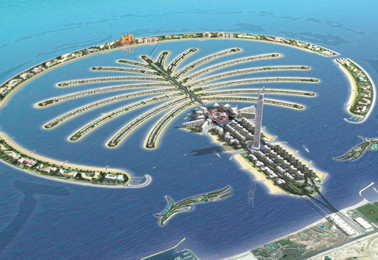
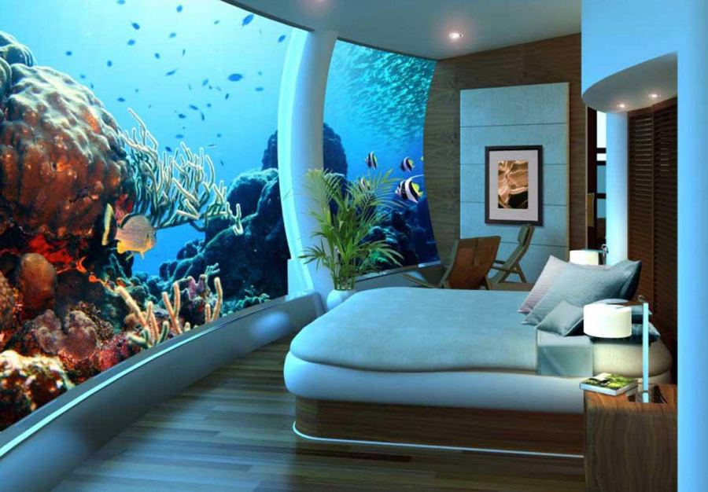
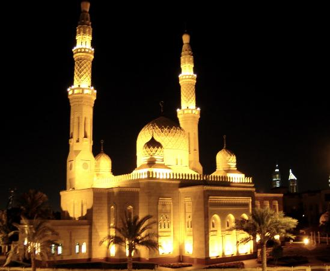
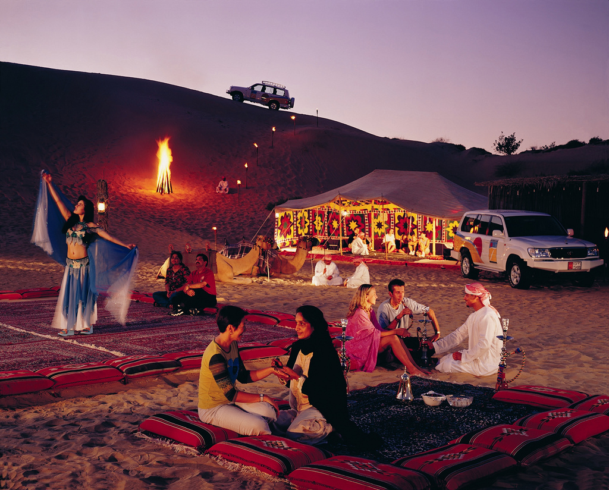
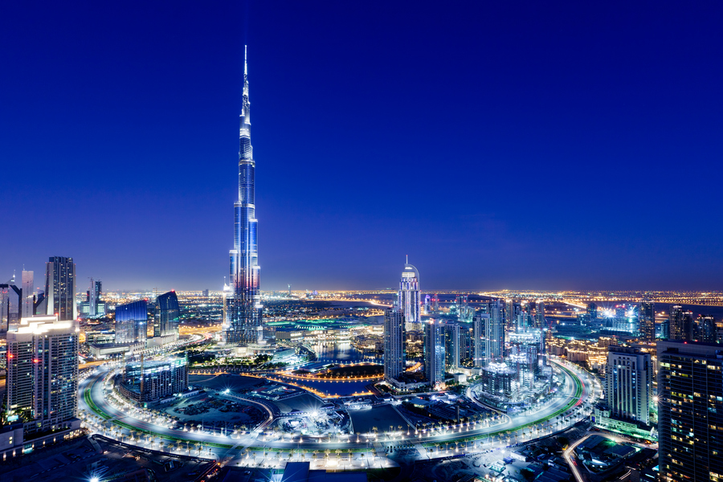
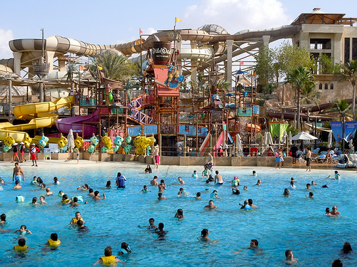
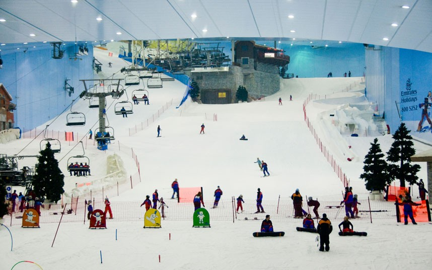

|
DJ Tours and Travels |

Welcome To Dubai
Dubai, worldwide famous for its high-rise buildings, man-made islands, the world's tallest habitable tower, the world's largest mall and much more.
7 Days/6 Nights Itinerary
|  |
Day 1 : Arrive Dubai (Friday or Saturday or Sunday)
Upon your arrival at Dubai Airport, our representative will meet you and escort you to your hotel at city.
Overnight: Dubai |
Day 2 : Half Day Dubai City Tour and Dhow Cruise Dinner
Breakfast at your hotel
AM – Free
PM (3:00) - The tour starts with a photo-stop at the famous landmark of Dubai, Burj Al Arab. Proceed to Jumeirah, the picturesque palace .
On your return, there is time to shop in the most famous landmark of Dubai – the gold souk. After Dubai City Tour drive back to your hotel.
Evening (7:00 PM): For a fabulous relaxing evening join our traditional Arabian dhow for an evening’s cruise on the Creek. Enjoy a sumptuous feast of Arabic and International cuisine while gently gliding past illuminated souks, banks and palaces.
Return hotel. Overnight: Dubai |
 |
|  |
Day 3 : Half Day Desert Safari with BBQ Dinner at Bedouin Camp
Breakfast at your hotel
AM - At Leisure
PM (3:00) -This tour departs in the afternoon across the desert with photo-stops during an exciting dune drive and visit the camel farm. The drive continues across the desert. Watch the beautiful sunset in the desert.
Reach our campsite, where you have the opportunity to do camel riding, sand boarding and try out a henna design on hands or feet. After working up an appetite enjoy a delicious barbecue dinner.
Before returning, watch our belly dancer performing her show around the campfire by starlight.
Overnight: Dubai |
Day 4 : Burj Khalifa
Breakfast at your hotel
This fantastic tour will give a real taste of what the United Arab Emirates is like outside of Dubai – starting at the Oasis of Al Dhaid and quickly taking in the picturesque Hajar mountains.
During your journey you’ll stop at several small fishing villages and markets, and be presented with opportunity to swim in the Indian Ocean,Palm Island, as well as making it to Al Badiyah – the oldest mosque in the Emirates.
In the evening,we will take you'll to the amazing Fountain show followed by visiting the tallest building-Burj Khalifa.Overnight: Dubai |
 |
|  |
Day 5 : Visit to famous Wild Wadi water park
Wild Wadi has a heated/cooled wave pool, multiple water slides and two artificial surfing machines. In addition, the park had the largest water slide outside of North America, but recently it was removed to make space for two other rides .
Another feature of the park is an 18 m (59 ft) waterfall that goes off every ten minutes. |
Day 6 : Visit to various malls and Ski Dubai
Breakfast at your hotel
On the last day of Dubai we will take you'll to the amazing malls of Dubai and the most wonderful place Ski Dubai.
Also offering Bateaux Dubai Dinner Cruise.
|  |
Day 7 : Dubai : Departure
Following breakfast at the hotel, checkout and depart for the Dubai Airport.
Meals on Tour :
Day 1 : Dinner
Day 2 - 6 : Breakfast, Lunch and Dinner
Day 7 : Breakfast
Extra Topping :
1) Soft drink at Dubai Museum.
2) Ice cream at Mall of the Emirates
3) Arabic Tea / Coffee / Soft Drink at Desert Camp.
4) Ice Cream at Dubai Mall
5) Soft drink at Wild Wadi Park
6) 1 LITRE DRINKING WATER PER PERSON PER DAY
Our Speciality :
Caring Tour Manager throughout the tour.
Meal Coupons at Ferrari Park
Reporting & Dropping for Joining & Leaving :
Day 1 : At the Airport/Hotel/Sight seeing place (Please re-confirm with our tour consultant 8 days prior to the tour).
Day 7 : Tour concludes at the Hotel/ Airport- as per scheduled group flight.
! EARLY BIRDS GET DISCOUNTS !
TOUR PACKAGE : Rs.1,00,000 **Terms and Conditions Apply